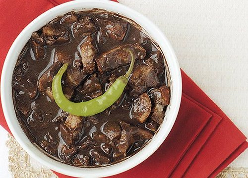
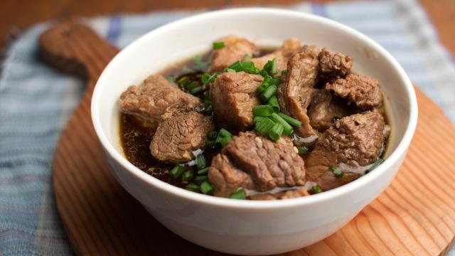

Batchoy
PRICE: ₱250.00
Batchoy is a soup dish composed of sliced pork, pig’s innards, and miki noodles.
This dish originated from the district of La Paz in Iloilo City — in the island of Panay.
Throughout the years, batchoy gained popularity and has been a favorite soup dish along with beef mami, beef pares, and bulalo.
Lechon
PRICE: ₱5'300.00
Lechon, derived from a Spanish word for roasted suckling pig is one of the most popular dishes in the Philippines.
The slowly-roasted suckling pig is usually stuffed with lemongrass, tamarind, garlic,
onions, and chives, and is then roasted on a large bamboo spit over an open fire.
Menudo

PRICE: ₱200.00
Kare Kare
PRICE: ₱300.00
Kare Kare is a Filipino stew that features a thick savory peanut sauce.
it is made from a based of stewed oxtail, beef tripe, pork hocks, calves' feet, pig's feet or
trotters, varius cuts of pork, beef stew meat, and offal. Vegetables such as eggplant, Chinese
cabbage, and other greens, daikon, green beans, okra and aspharagus bea
Dinuguan
PRICE: ₱220.00
Dinuguan is a Filipino savory stew made of pork offal (lungs, kidneys, intestines, ears, heart and snout) and meat simmered in a rich, spicy dark gravy of pig blood, garlic, siling haba, and vinegar.
Pancit Bihon

PRICE: ₱220.00
Pancit Bihon or Pancit guisado is a Filipino dish that consists of noodles cooked with
soy sauce along with some variation of meats and vegetables.
this dish is composed of peanut oil, chicken breast, garlic, onions, Bihon noodles.
As for the vegetables it is composed of green beans, carrots and cabbages.
For the sauce it is made of a mixture of chicken stock, soy sauce, and oyster sauce.
Sinigang na ulo ng salmon
PRICE: ₱450.00
Sinigang is a Filipino soup or stew that is characterized by its sour and savory taste.
this dish is composed of fresh salmon head, sampalok, sampalok mix, tomato, onion, fish sauce, and 1 liter of water.
Pork Adobo
PRICE: ₱225.00
Adobo is a popular Filipino dish and cooking process is Philippine Cuisine.
in its base form, meat seafood, or vegetables are first browned in oil, and then
marinated and simmered in vinegar, salt and soy sauce and garlic.
It is a dish composed of pork slices cooked in soy sauce, vinegar, and garlic.
Pork Sisig

PRICE: ₱325.00
Sisig is a Filipino dish made from pork jowl and ears, pork belly, and chicken liver, which is seasoned with calamansi, onions, and chili peppers.
Palabok

PRICE: ₱275.00
Palabok or Pancit Palabok is a type of Filipino noodle dish that makes use of cornstarch sticks, which is also known as palabok noodles. It has an orange sauce composed of minced pork, tinapa flakes (or smoked fish flakes), and annatto water. topped with hard boiled egg wedges and shrimps
Lumpiang Shanghai

PRICE: ₱200.00
Lumpia or Lumpiang Shanghai is a type of Filipino egg roll. The basic filling is composed of ground pork along with minced onions, carrots, eggs, and seasonings such as salt and ground black pepper. wrapped in a spring roll wrapper
Fried Siken

PRICE: ₱230.00
The everyone's all time favorite the Fried Chicken. This dish is composed of Chicken, buttermilk, flour, paprika, salt and pepper, and Vegetable oil made into perfection.
Pares
PRICE: ₱120.00
Pares or Beef Pares is are cubed beef briskets cooked with spices and tenderized to perfection.
The aroma of this dish alone is enticing. The taste is captivating.
You will surely ask for more after tasting it.
This dish is composed of Beef, beef cubes, star anise, brown sugar, scallions, ginger,
soy sauce, onion, garlic cloves, 2 ¹/₂ cups water, cooking oil, salt and ground black pepper to taste